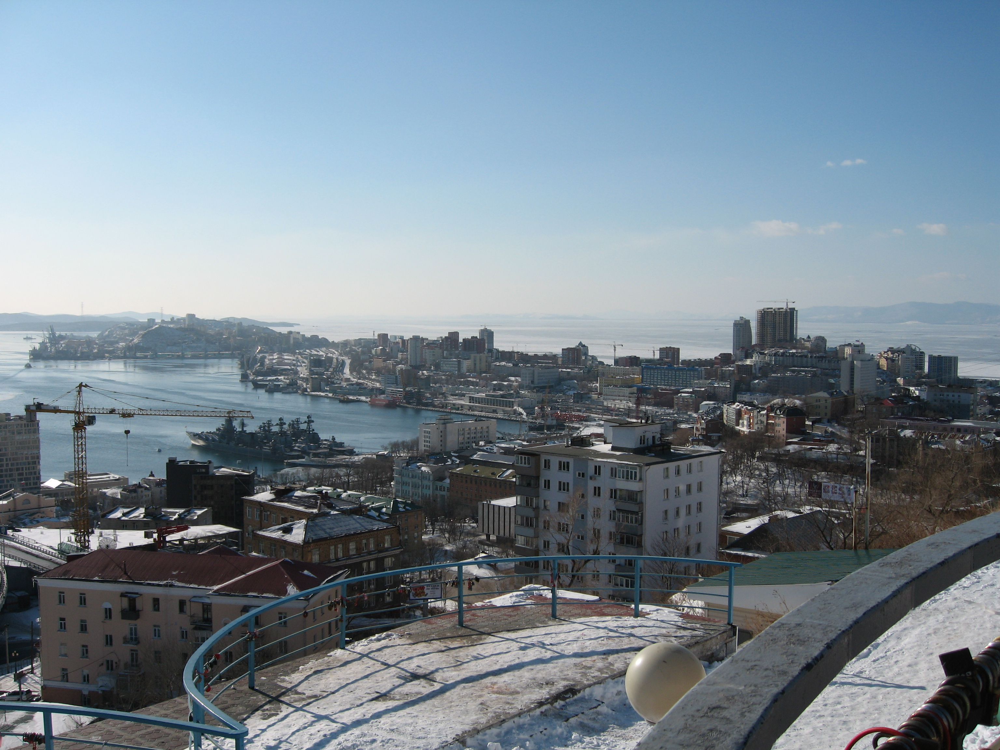

Зимний город
Снег покрывает крыши, а море остаётся живым — суда и краны напоминают, что жизнь здесь не замирает. Синее небо, белый снег, серые дома — контрасты, создающие особое очарование.
← Вернуться на главную